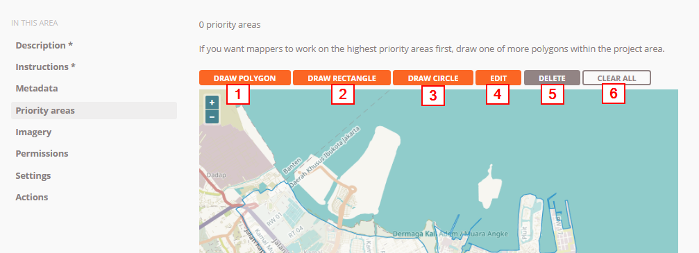
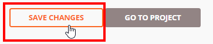

Creating and Managing Tasking Manager
Download page as PDFObjectives:
Explain the functions of Tasking Manager in the context of participatory mapping
Able to explain how to make Tasking Manager
Able to explain how to manage existing Tasking Manager
You must already know how to use tasking manager to perform mapping activities together. When you use a tasking manager that doesn’t suit the area you want, then you might want to make a tasking manager for your own area. In this module, you will learn how to make tasking manager. Making tasking manager requires the person responsible for the tasking, so that the resulting OSM data has good data quality. Also this is because the initial tasking manager was made for mapping needs as a disaster response in an area.
I. What is a The Tasking Manager
a. Definition of a Tasking Manager
Tasking Manager is a tool specifically created for mapping collaborative and participatory. The Tasking Manager allows you to map in an area together with other OSM users by dividing the mapping in the targeted area. The aim of the Tasking Manager is to divide the mapping work into several different grids/ boxes so that everyone can choose a grid/box to be done. In addition, the Tasking Manager can also make it easier for you to monitor the progress of mapping so you can find out which areas still need to be mapped and which areas have been mapped.
Imagine if you want to map in a certain area where you have to map together with 20 other people. If there is no division of tasks and mapping area, there will be a possibility that some people will map in the same area. With the Tasking Manager, things like this can be avoided and mapping work will be completed more quickly and effectively.
b. The example of the use of the Tasking Manager
Tasking Manager first used was under a response when the Typhoon Haiyan disaster occurred in the Philippines on November 8, 2013. Mapping using the Tasking Manager was conducted in Tacloban City, one of the cities that was severely affected when the disaster occurred. Within 24 hours after the project was created in Tasking Manager, as many as 10,000 buildings had been mapped or around 25% of the total number of buildings in Tacloban City. All of this mapping was carried out by 33 volunteers.
The condition of the building before and after being mapped with the Tasking Manager
In Indonesia, the Tasking Manager also use to respond when a disaster occurred. One example is when the earthquake and tsunami struck in the Sunda Strait in December 2018. Within a month, all the affected area were mapped by 60 people.

The Tasking Manager was created as a disaster response in the Sunda Strait
II. Makes New Project
To create new tasking in tasking manager, you must first have access as a project manager. If you do not have access, then you can request the access by sending e-mail to team.id@hotosm.org for a tasking manager specific to Indonesia or mapper-support@hotosm.org for global tasking manager. After you have managed to get access to tasking, you can look at the top right of the tasking front page and click Create New Project button.

How to make a new project in the tasking manager
There are several steps that must be done when creating new task:
a. Define the project area
Step 1: Define Area = set your task area
After you press Create New Project, you will be directed to the first setup page, which is to set the area of your mapping project. There are two ways to set the mapping of the project area:
- Draw= with freely draw the area of interest
- Import= using spatial data format such as GeoJSON, KML, OSM or SHP compressed in zip.
Click Next when you have finished managing your work area.
Options for setting work area
Step 2: Choose Tasks Step = adjust the type of division for mapping area
After you have set up the work area, the next stage is that you are asked to set up the form of division of your work area. There are two types of division of work areas: square (square grid) and free (Arbitary Tasks). If you choose the shape of the box, your work area will be divided into several square boxes of the same size. Meanwhile if you choose the free form. Your work area will be divided into several random sizes. Click Next to go to the next stage.
Options set the task type
Step 3: Set Task Sizes = Set size of the box
At this step, you will set the size of the grid. It is assumed that in the previous step you chose to divide the work area into boxes and at this step you will determine the number of boxes in the area that you specify. The bigger the size of the work box, the less the number of task area. However, this also means that mapping volunteers who participate in mapping your area may get a very large size of the mapping area and vice versa.
Description of tools at step three
Note:
A few tips in determining the size of the task size, you certainly want to make a work box that is not too big and not too small. To determine it you can see it through the density of the road network seen in your mapping area, by using satellite imagery Bing or Mapbox. If you see a task in dense populated area, you can divide the box into several small boxes using Split (Polygon) or Split (Point).
Step 4: Trim Project = Cutting grid boxes that are not needed
After you set the size of the grid, in the next step you will be asekd whether you want to cut the grid specific to your project area or not. By using this feature, you can delete a grid that is outside the task area and leaves only a grid that matches the boundary area of your area of interest.
Using the trim to cut the work area
Step 5: Review = Give the project name
The next step is that you give a name to your mapping project. At this step you should give a name that is easy to find by other users. In this section there is also a description of the number of grids / boxes that you will work on, as shown below, there are 56 _grids /_boxes. Click **Create **to make your_ tasking manager_.
The final stage before the project is made
b. Setting Project Descriptions
After completing the project, you will be directed to additional settings where you will enter project descriptions, instructions, priority areas, etc. You must enter the project description and data mapped instructions, while others are optional.
Description= Provide a project description
There are a number of things you do in this section.
You will set the status of your tasking(Draft, Published, Archived).
- Draftis the default setting when the project was first created. If aproject is _tasking _still drafted, mapping volunteers will not be able to help map your tasking.
- Published means your project _tasking _has been published so that other people can see and help map your _tasking _your.
- Archived means your tasking project has been archived because it’s finished or there is a new tasking project with the same area.
Select Published so that volunteers and your team can see your task.
You will set priorities of your tasking. In the tasking manager, you will be given three priority choices, such as urgent, high, medium, and low where each level has different meanings. You can set your tasking to an urgent level if the project tasking created by you aims to be mapped immediately like mapping responses when a disaster occurs so your tasking project will be displayed at the top of the tasking list. Set priority to high if your mapping is the mapping for disaster response but the disaster has passed the emergency response phase. Set priority to medium if your mapping project is not too urgent to map but is included in the scope of mapping for disaster. Set priority to low if your project activities are not urgent and not an activities for disaster mapping.
You will set a summary (Short description) and a full description of your tasking manager. In providing a summary (short description) and a description for your tasking, there is a choice of languages from English (EN) and Indonesian (ID). The choice of language will appear when the users change the language of tasking manager to the language they want. If you want to enter Indonesian only, select ID as a language choice and then fill in the brief description in format markdown. Markdown is the same format as html with simpler writing. For writing guidelines with markdown, you can see it on the Markdown Guide1.
Explanation for the Section Description of Your Mapping Project
Instructions= Provide mapping instructions
In this section you will provide information about objects that should be mapped to the Tasking Manager that you have created.
In the section Entitles to map, you can describe what objects you need from this project tasking. Suppose you need data on road, building and river networks. So in this section, you can describe these objects.
In the section Changeset comment, you can set the default changeset comments that will appear automatically when users upload their edits to OpenStreetMap.
In the section Detailed Instruction, You can enter mapping instructions in detail. This explanation is very helpful for volunteers who want to contribute to your tasking project but do not have experience in mapping either the Tasking Manager or OpenStreetMap. You can provide detailed instructions in this section.
Display in the instruction section
_Metadata _= Set project metadata (optional)
Mapper Level
In this section, you can set the difficulty of the mapping project and arrange it based on your own perceptions. For example, if the mapping area is a densely populated residential area with poor satellite imagery and the data needs to be mapped are public building data, you can adjust the level of difficulty in mapping the area such as beginner, intermediate, or advanced.
Type (s) of Mapping
You can identify objects that will be mapped on your tasking project by checking the list of objects in the Type (s) of Mapping section.
Organization Tag
In this section you can write your organization tag to make it easier to find tasking project in the search column.
Campaign Tag
Just like an organization tag in this section you can add tags that match your mapping project to make searching easier.
Display metadata page
Priority Areas = Set priority area (optional)
In this menu you can draw priority areas for your _taski_ng in several ways:
- Draw area using DRAW POLYGON
- Draw a box-shaped area using DRAW RECTANGLE
- Draw a circle using DRAW CIRCLE
- Change the priority area that has been drawn using EDIT
- Delete the priority area by using DELETE, and
- Delete all priority areas by using CLEAR ALL

Priority Areas page display
_Imagery _= Provides additional satellite imagery (optional)
If you have additional satellite imagery in the TMS (Tile Map Service) format. You can enter the _url _in this section. Besides that you also need to set a license from the satellite image you are using. You must ensure that the satellite imagery you use has a license that can be used for mapping in OpenStreetMap.
Imagery page view
_Permissions _= Set project permission level (optional)
In this section you can manage your project tasking only accessible to users with skill levels from beginner to advanced level. By activating thefeature Mapper Level, your tasking project can only be done by users with the level you have specified.
If you activate the Level Validator , the user who can access your tasking to do data validation is a user with alevel validator.
If you activate Private Project then your tasking will only be accessible by the user whose name (user OSM) you have specified before. Other people outside the set name cannot see the tasking made by you.
Display page Permissions
After completion with additional settings. You can save your tasking project by clicking SAVE CHANGES at the bottom.

Click the button to save the modified tasking project
III. Tasking Project Management
a. Changing Instructions and Descriptions
If you want to add a few sentences of new instructions or want to change the description of your project as the mapping progresses in your tasking, you can choose **Edit Project **on your tasking page_ _. After that you can immediately change the description and instructions for your tasking.
Click EDIT PROJECT to change the description of your tasking projecta
b. Validation
As your tasking progresses and the data increases in the area you are working on, some volunteers may be unfamiliar with digitizing with OSM so you need validation activities to improve the data quality. For more details, you can read Data Quality Assurance with Tasking Manager. Please click button **Validate **to switch to the validation page for your tasking project.

Tasking manager validation page
There are 5 options on the validation page results in tasking manager: 1. Select the box on the map yourself. This way you can simply select the grid/box available on the map to start validation. 2. Choose boxes randomly. This way you will be helped to choose the box. 3. Choose a box by drawing a polygon. By using this feature. You can choose several boxes to validate by drawing a polygon or area. 4. Select the box that has been locked before. If you have already got the box validated but don’t remember choosing the box, you can use this feature. By clicking this button, you will be directed to the previously selected box. 5. Choose according to username. You can also validate a box by choosing based on the name of the participating user to map it on your tasking project.
c. Changing Priority Areas.
You can specify priority areas to map first. The trick is to click Edit Project first and after that you go to Priority areas. Change and add your priority area using the method described in the previous section.
d. Some Action Features in Tasking Manager.
In your tasking manager management menu, there are several action buttons: * Send a message to the contributors to your tasking project. By using the button_ Message All Contributors. _You can send messages that will be read by all contributors to your tasking project. This is certainly very useful if there are changes to the object being mapped or changes in priority areas. * Manage all tasking simultaneously. There is a tool that you can use to manage all the tasks simultaneously. * Map All Tasks used to indicate that all the boxes on your tasking have all been mapped. * Invalidate All Tasks used to cancel all the validated boxes * Validate All Tasks used to validate all boxes that have been mapped * Reset All Bad Imagery Tasks is used to reset all boxes that have information that the satellite image in the box cannot be used. * Removing tasking projects. Using Delete Project button You can immediately delete your tasking project with a note that there are no contributors participating in your tasking. * Reset the tasking project. With Reset Tasks button you will reset your tasking but can still keep a history of contributors who participated in mapping your tasking project. * Duplicate tasking. With Clone Project button You can duplicate your tasking and create new tasking with the same description and work area as previous tasking. The different thing is your tasking will in status Draft and for the area to be mapped, the number of boxes and priority areas will not be duplicated so you have to make further arrangements.
Display of the features contained on the Action page
e. Archives the Tasking Project
If the tasking project is complete, you are advised to archive the tasking project that you have created. This aims to avoid contributors from mapping yourtasking that is. To archive a tasking project, click Edit Project and select Description. On the status menu, change from Published to Archived. Click Save Changes to save changes.

Change project status from Published to Archived
SUMMARY
Congratulations! You have now successfully learned how to create and manage projects in tasking managers. By using tasking manager, your mapping project will become more organized. Things that must be considered, when you make a tasking manager, the project must be completed and considered not only the quantity of data but also the quality of the data.